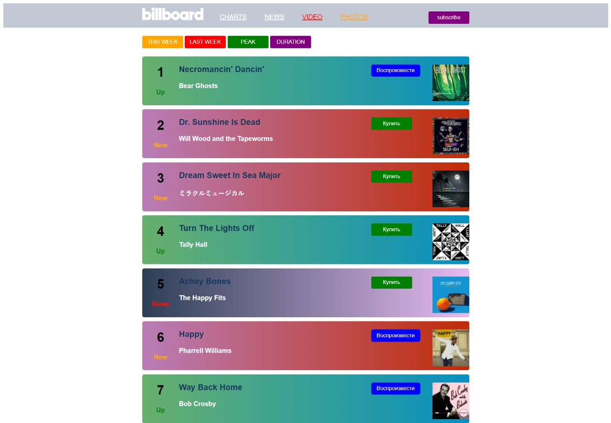
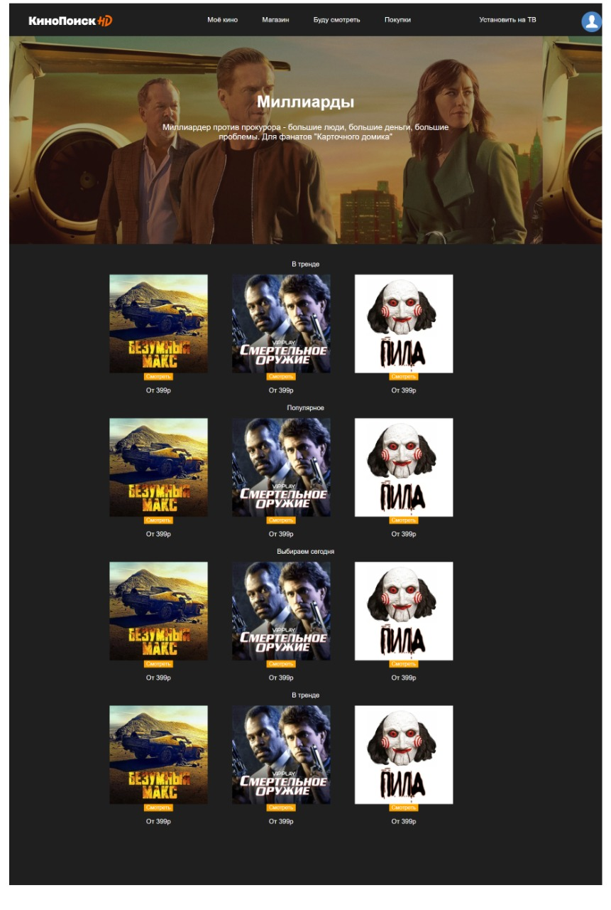

Billboard
Этот билборд не самый любимый для меня, но хей, тут я узнал о градиентах, которые помогли мне в будущем, но я не ощущал того энтузиазма, когда делал этот проект

Проект, которым я не особо горжусь и не сильно нравится
Кинопоиск
Я тут учился познавать hover, а так же постигать трюки с "дивом", но вызывало лишь раздражение и желание закончить как можно быстрее

Проект, которым я не особо горжусь и не сильно нравится
Твиттер
Здесь же основы Bootstrap'а меня ни чем не удивили, но заставили хорошенько пораскинуть мозгами, ничего особенного и интересного

Проект, которым я не особо горжусь и не сильно нравится